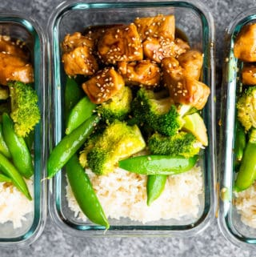

Honey Sesame Chicken

Honey Sesame Chicken Recipe
Ingredients
Hone Sesame Sauce
- 1/4 cup chicken stock or water
- 1/4 cup reduce sodium soy sauce
- 1/4 cup honey
- 1 tbsp seasme oil
- 1/2 tsp red pepper flake
- 1 tsp cornstarch
Chicken Lunch Bowls
- 3/4 cup rice
- 2 tbsp olive oil
- 3 cups broccoli
- 3 cups snap peas
- 2 large chicken breasts (cut into 1 inch cubes)
- salt and pepper
- sesame seeds (garnish)
Steps
- Shake together all honey sesame sauce ingredients and set aside.
- Cook rice according to package instructions. Divide between 4 storage containers.
- Heat 1 tablespoon olive oil in a large pan. Add broccoli and snap peas. Cook for 5-7 minutes, until bright green and tender. Add to the rice in the storage containers.
- Add remaining 1 tablespoon olive oil to pan. Add the chicken to the pan. Season with salt and pepper, and red pepper flakes (if desired). Cook for 7-10 minutes, until cooked through.
- Add the sauce to the pan and simmer for 2 minutes, until thickened.
- Add the chicken to the lunch containers and drizzle with sauce. Garnish with sesame seeds if desired.
- Store in the fridge for up to 4 days. Reheat to serve.
Recipe Source
Go Home